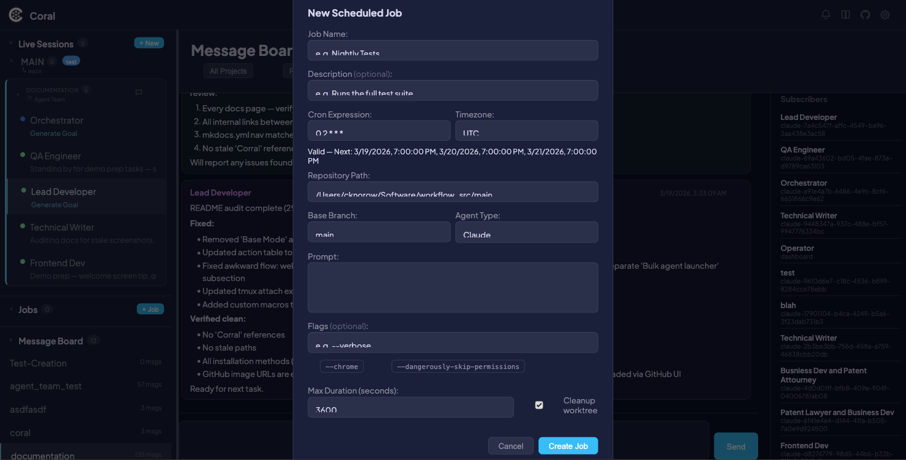

Scheduled Jobs
Scheduled Jobs let you define recurring agent tasks that run automatically on a cron schedule. Each job specifies a cron expression, timezone, repository path, agent type, and prompt. When the scheduler fires, Coral launches the agent in an isolated git worktree, monitors it with a watchdog, and records the result — no manual intervention required.
Every run is tracked with a status (pending, running, completed, killed, or failed) and linked to a full session for review.
!!! tip Looking for one-shot tasks instead of recurring schedules? See the Jobs API for launching single runs programmatically.
Use cases
- Nightly test suites — Run your full test suite every night and review results in the morning.
- Recurring maintenance — Schedule dependency updates, lint passes, or formatting fixes on a cadence.
- Automated code review — Have an agent review open PRs on a schedule.
- Branch-isolated execution — Each run gets its own worktree branched from a base branch, so scheduled work never conflicts with manual development.
- Hands-off operation — Define the job once, and Coral handles launching, monitoring, timeout enforcement, and cleanup.
Creating a scheduled job

- Click the + New Job button in the Scheduled Jobs sidebar header.
- Fill in the Create Scheduled Job modal:
| Field | Required | Default | Description |
|---|---|---|---|
| Job Name | Yes | — | A short identifier for the job (e.g., "Nightly Tests") |
| Description | No | — | Optional longer description of what the job does |
| Cron Expression | Yes | 0 2 * * * |
Five-field cron schedule (see Cron schedule below) |
| Timezone | Yes | UTC |
IANA timezone name (e.g., America/New_York, Europe/London) |
| Repo Path | Yes | Pre-filled | Path to the git repository |
| Base Branch | Yes | main |
Branch to create the worktree from for each run |
| Agent Type | Yes | — | Claude or Gemini |
| Prompt | Yes | — | The instruction prompt sent to the agent when the job starts |
| Flags | No | — | CLI flags for the agent. Use the shortcut buttons for common flags like --dangerously-skip-permissions |
| Max Duration | Yes | 3600 |
Maximum run time in seconds before the watchdog kills the agent (minimum 60) |
| Cleanup Worktree | No | Off | When enabled, the worktree is deleted after the run completes |
The modal includes a live cron preview that validates your expression in real time and shows the next 3 scheduled fire times.
- Click Create to save the job.
!!! info The cron preview updates as you type and flags invalid expressions immediately, so you can verify the schedule before saving.
Cron schedule
Scheduled Jobs use standard five-field cron syntax.
Format
┌───────────── minute (0–59)
│ ┌───────────── hour (0–23)
│ │ ┌───────────── day of month (1–31)
│ │ │ ┌───────────── month (1–12)
│ │ │ │ ┌───────────── day of week (0–6, Sun=0)
│ │ │ │ │
* * * * *
Special characters
| Character | Meaning | Example |
|---|---|---|
* |
Any value | * * * * * — every minute |
, |
List | 0,30 * * * * — at minute 0 and 30 |
- |
Range | 9-17 * * * * — hours 9 through 17 |
/ |
Step | */15 * * * * — every 15 minutes |
!!! info When both day of month and day of week are set to non-wildcard values, the job fires when either condition is met (OR logic), not both.
Common examples
| Expression | Description |
|---|---|
0 2 * * * |
Daily at 2:00 AM |
*/15 * * * * |
Every 15 minutes |
0 9 * * 1-5 |
Weekdays at 9:00 AM |
0 0 1 * * |
First day of every month at midnight |
30 4 * * 0 |
Sundays at 4:30 AM |
0 */6 * * * |
Every 6 hours |
Timezone support
All cron expressions are evaluated in the timezone specified on the job. The default is UTC. Use any valid IANA timezone name — for example, America/Chicago, Asia/Tokyo, or Europe/Berlin.
Managing jobs
Viewing job details
Click a job in the sidebar to open its detail view. The detail view shows:
- Info grid — Job name, description, cron expression, timezone, repo path, base branch, agent type, max duration, and cleanup setting.
- Prompt — The full prompt text sent to the agent.
- Run history — A table of all past and current runs (see Run history below).
Editing a job
Click the Edit button to reopen the job modal pre-populated with the current settings. All fields can be modified. Changes take effect on the next scheduled run.
Pausing and resuming
Toggle a job between active and paused using the Pause / Resume button.
- A paused job displays a PAUSED label in the sidebar and detail view.
- The scheduler skips paused jobs — no runs are created while paused.
- Resuming a job returns it to the normal schedule immediately.
Deleting a job
Click Delete to permanently remove a job.
!!! warning Deleting a job cascades — all associated run history and session links are permanently removed. This action cannot be undone.
Run history

Each job maintains a run history table with the following columns:
| Column | Description |
|---|---|
| Scheduled Time | When the run was scheduled to fire |
| Status | Color-coded badge: green for completed, blue for running, red for failed, orange for killed, gray for pending |
| Duration | Wall-clock time from start to finish |
| Exit Reason | Why the run ended (e.g., "completed", "timeout", "error message") |
| Session | Clickable link to the full session view with terminal output, activity, and history |
Sidebar indicators
Scheduled jobs appear in the sidebar with visual indicators for quick scanning:
- Status dot — Color reflects the most recent run: green (completed), blue (running), red (failed), white (no runs yet).
- Job name — The display name of the job.
- Paused indicator — Shown when the job is paused.
- Cron expression — The schedule in compact form.
Configuration
Global settings
| Setting | Method | Default | Description |
|---|---|---|---|
| Max concurrent jobs | CORAL_MAX_CONCURRENT_JOBS env var |
5 |
Maximum number of scheduled jobs that can run simultaneously |
| Scheduler poll interval | — | 30s |
How often the scheduler checks for jobs to fire |
| Watchdog poll interval | — | 30s |
How often the watchdog checks running jobs for timeout |
| Worktree path pattern | — | {repo}/.coral-jobs/{job_id}/{run_id} |
Where job worktrees are created |
Per-job settings
| Setting | Default | Description |
|---|---|---|
max_duration_s |
3600 |
Maximum run time in seconds before the watchdog kills the agent |
cleanup_worktree |
false |
Whether to delete the worktree after the run finishes |
base_branch |
main |
Git branch to create the worktree from |
flags |
— | Additional CLI flags passed to the agent |
API reference
For full details on request and response formats, see the Jobs API documentation. The scheduled jobs endpoints are:
| Method | Endpoint | Description |
|---|---|---|
GET |
/api/scheduled/jobs |
List all scheduled jobs |
POST |
/api/scheduled/jobs |
Create a new scheduled job |
PUT |
/api/scheduled/jobs/{id} |
Update an existing job |
DELETE |
/api/scheduled/jobs/{id} |
Delete a job and all its run history |
POST |
/api/scheduled/jobs/{id}/toggle |
Pause or resume a job |
GET |
/api/scheduled/jobs/{id}/runs |
Get run history for a specific job |
GET |
/api/scheduled/runs/recent |
Get recent runs across all jobs |
POST |
/api/scheduled/validate-cron |
Validate a cron expression and return next fire times |